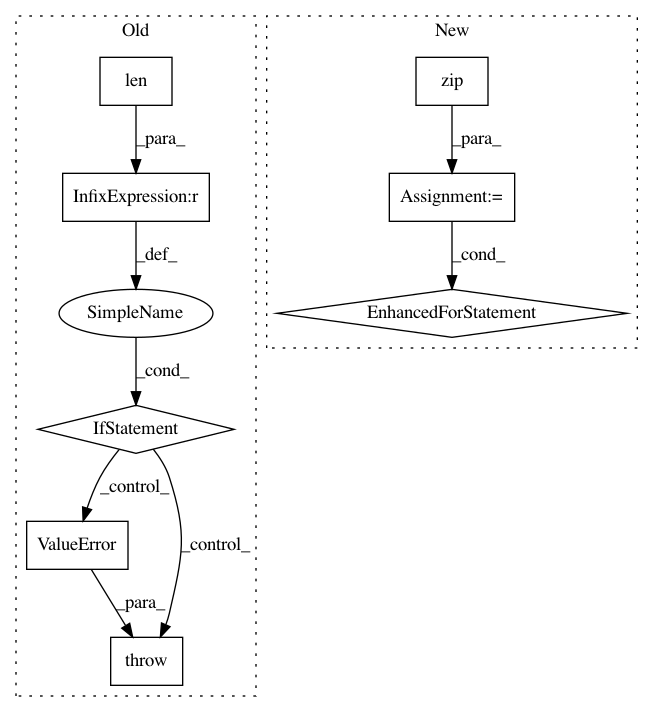

c676395da1a5ca321ba75f6a8025eefa4b99483e,pgmpy/models/ClusterGraph.py,ClusterGraph,get_cardinality,#ClusterGraph#Any#,211
Before Change
for factor in self.factors:
for variable, cardinality in zip(factor.scope(), factor.cardinality):
cardinalities[variable] = cardinality
if check_cardinality and len(set((x for clique in self.nodes() for x in clique))) != len(cardinalities):
raise ValueError("Factors for all the variables not defined.")
return cardinalities
def get_partition_function(self):
r
After Change
if node:
for factor in self.factors:
for variable, cardinality in zip(factor.scope(), factor.cardinality):
if node == variable:
return cardinality
else:
cardinalities = defaultdict(int)
for factor in self.factors:
for variable, cardinality in zip(factor.scope(), factor.cardinality):
In pattern: SUPERPATTERN
Frequency: 3
Non-data size: 8
Instances
Project Name: pgmpy/pgmpy
Commit Name: c676395da1a5ca321ba75f6a8025eefa4b99483e
Time: 2017-10-04
Author: lohani.ayush01@gmail.com
File Name: pgmpy/models/ClusterGraph.py
Class Name: ClusterGraph
Method Name: get_cardinality
Project Name: pgmpy/pgmpy
Commit Name: 9340e62be9d010c5db6724c27589d885fa08b27e
Time: 2017-10-04
Author: lohani.ayush01@gmail.com
File Name: pgmpy/models/FactorGraph.py
Class Name: FactorGraph
Method Name: get_cardinality
Project Name: tensorflow/transform
Commit Name: 190966e3b8e24aceb5c91e582357221a55f3f2f6
Time: 2020-12-01
Author: zoy@google.com
File Name: tensorflow_transform/tf_metadata/schema_utils.py
Class Name:
Method Name: _sparse_feature_as_feature_spec